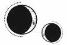

CAPÍTULO 5
Helena no respondió. No tenía ni idea de qué esperar o qué hacer, así que observó a Ferron como un animal acorralado.
Este desvió la mirada a la puerta.
—Supongo que ha sido Aurelia quien te ha traído aquí. —Suspiró—. Entiendo que ya ha llegado la hora de empezar.
Se acercó. Helena se tensó, pero Ferron pasó de largo hasta el armario y lo abrió de un tirón.
Por lo visto, no era tan ascético como sugería la habitación. Las puertas del armario ocultaban un estante repleto de decantadores. Escogió uno, vertió un par de dedos de líquido ambarino en un vaso y, tras girarse, le dio un sorbo, mirándola por encima del borde del cristal. Una mirada que empezó en el suelo y fue subiendo lentamente por su cuerpo.
Cuando alcanzó sus hombros, apartó la vista. Observó el vaso y soltó otro suspiro, como si la situación le resultara de lo más inconveniente.
—Acabemos con esto.
Helena no se movió.
Ferron levantó la vista.
—Ven aquí.
Cuando ella no obedeció, esbozó lentamente una sonrisa.
—Puedo obligarte si no lo haces.
Alzó una mano y gesticuló sin aspavientos; sus largos dedos se curvaron con una precisión impecable, nudillo a nudillo.
Las piernas de Helena comenzaron a moverse en contra de su voluntad, como una marioneta manejada desde fuera del escenario. Dobló las piernas, las levantó, cambió el peso, dio un paso y luego otro. Se resistió a ello, tensando cada músculo, pero eso solo hizo que sintiera cómo los huesos amenazaban con partirse.
La presión desapareció cuando estuvo situada a un brazo de distancia de Ferron, que le levantó la barbilla con la yema de un dedo y la miró directamente a los ojos.
—¿Ves? —dijo—. Será más fácil si obedeces.
Le hubiera gustado escupirle, si hubiera podido, pero cuando lo intentó comprobó que tenía la mandíbula apretada y los dientes encajados. Los ojos de Ferron resplandecieron.
—No me pongas a prueba; no conseguirás lo que quieres —le dijo mirándola con esos ojos espeluznantemente caídos—. Mira, esto es nuevo para mí. No suelo hacer prisioneros.
Vació el vaso y lo dejó sobre la mesa.
—Siéntate. —Señaló la silla.
Helena notó que podía mover las extremidades. Por un instante, se planteó salir corriendo, aunque solo fuera por molestarlo, pero la resonancia de Ferron seguía atravesándole los nervios como una cuerda tensa.
Se sentó y, en cuanto lo hizo, no pudo volver a moverse.
Ferron se colocó detrás de ella. Aunque no podía verlo, oía su respiración y el roce de su ropa, lo que hacía que su corazón latiese más deprisa y sus oídos se esforzaran por captar todos los sonidos.
Con una mano le sujetó la mandíbula y le echó la cabeza hacia atrás hasta que quedó mirando el techo. No le veía la cara, solo la otra mano, que llevaba un anillo oscuro que brillaba débilmente bajo la tenue luz. Colocó dos dedos contra su sien y el pulgar entre sus ojos.
Ferron se inclinó hacia delante lo justo para que ella pudiera verle el rostro.
—Ahora veamos lo que es ser tú.
Helena se puso en tensión cuando sintió que un peso le envolvía toda la parte frontal del cráneo. La presión aumentó gradualmente, hasta que algo cedió en su interior, como si los dedos de Ferron hubieran atravesado su frente y se hubiesen metido en su cerebro.
De repente, notó que se abría paso por su mente y por su cuerpo. Sabía que su cráneo seguía intacto, que Ferron aún tenía las manos sobre su piel, pero sentía como si le hubiera abierto la cabeza como quien casca un huevo, dejando su cerebro expuesto a la resonancia de Ferron.
No era un canal de energía como el que empleaba la resonancia normal, sino algo inmenso y fluido que se infiltró en cada rincón de su mente, hasta que Helena empezó a asfixiarse bajo su peso. Las fisuras y los recovecos de su consciencia se llenaron con la creciente opresión de una fuerza desconocida que trataba de ocupar el plano de su existencia cerebral. Cuando no quedaron más recovecos, aplastó su consciencia, que pareció venirse abajo.
Todo se tornó rojo.
Helena estaba gritando.
Lo oía, lo sentía. La parte física de su ser que seguía inmovilizada en la silla gritaba, pero la mente de Helena estaba en otro sitio, resquebrajándose bajo la presión cada vez mayor que Ferron ejercía contra su consciencia.
Ferron no se detuvo, aumentó la intensidad. Helena se estaba ahogando en su propio cerebro, atrapada conforme subía el nivel del agua y aumentaba la presión, sin escapatoria. Ferron la había devorado por completo.
Un zumbido sísmico resonó en sus oídos y, después, apareció una luz, como si una neblina se evaporara.
Aún miraba fijamente el techo cuando un rostro pálido se cernió sobre ella, observándola.
Helena movió los ojos de un lado a otro, sobrecogida por los rasgos crueles de Ferron, por lo extraño y antinatural que era. Con cierto sopor, se percató de que él estaba ya en su mente, mirándose a sí mismo a través de sus ojos.
Y entonces, de repente, desapareció. Arrancó su resonancia y su mente como si fueran malas hierbas.
Toda la mente de Helena se desplomó alrededor de aquel vacío y la integridad de su propia consciencia se resquebrajó.
Cayó de la silla hacia un lado mientras la habitación giraba con ella.
Los pensamientos le dieron vueltas en el cráneo, como un dado lanzado al azar.
¿Dónde estaba?
—Vete.
Reconocía las palabras, pero provenían desde muy lejos. Sonidos. No era etrasiano. El idioma etrasiano era más bello, más melódico.
Esto era…
Un dialecto.
Estaba pensando muy lentamente.
Intentó levantar la cabeza, pero la habitación seguía dando vueltas.
Debía de estar en un barco, cruzando el mar, dejando atrás los acantilados y las islas.
¿Adónde se dirigía?
Al colegio. Sí, iba a estudiar alquimia.
Tenía algo húmedo en la cara. Con esfuerzo, intentó mover la mano y consiguió limpiarlo.
Acabó con los dedos rojos. ¿Por qué estaban rojos?
—¡Vete!
La habitación tembló. Helena sintió cómo una fuerza invisible la levantaba y la empujaba hacia la puerta. Se desplomó, mareada, pero la sacudida la hizo volver en sí y recordar.
Ferron, la transferencia.
Se le encogió el estómago. Si no hubiera estado vacío, habría vomitado.
Miró hacia atrás. Ferron seguía allí, con el rostro blanco y terrorífico, retorcido por la rabia. La habitación vibraba.
—¡He dicho que te vayas! —gritó, como un animal, listo para abalanzarse sobre ella y arrancarle la garganta con sus propios dientes.
Un terror absoluto la impulsó a ponerse en movimiento. Se incorporó, abrió la puerta y huyó.
El suelo parecía hundirse bajo sus pies. Aún lo veía todo bañado en rojo, por mucho que parpadease, como si las paredes estuvieran cubiertas de sangre y las sombras hechas de entrañas. Siguió frotándose los ojos mientras buscaba desesperadamente una salida.
Lo único que oía era su respiración agitada y el sonido de sus pies contra la madera desnuda. Sentía el hierro del suelo como si fuera hielo.
Al llegar a la parte superior de las escaleras, supo que iba a sufrir una conmoción, le pesaban las extremidades como si fueran de plomo, empujándola hacia el suelo. Su cuerpo se enfriaba cada vez más conforme la consumía un escalofrío febril.
Se mareó y estuvo a punto de caer escaleras abajo, así que se agarró a la barandilla para mantenerse recta y contempló el vestíbulo inferior.
Las rosas ondeaban como si estuvieran sumergidas bajo el agua, el suelo se movía y, a su alrededor, daba vueltas un dragón negro.
Se enroscaba hacia el interior, girando en torno a la mesa, con las alas extendidas y la cabeza gacha, de forma que la cola quedaba atrapada entre los dientes, consumiéndose a sí mismo.
Era un uróboro, y en su visión teñida de rojo, parecía que estaba nadando en sangre.
¿Y si se tiraba desde la balaustrada? No había nadie que la pudiera detener. Los secretos que Luc le hubiera confiado estarían a salvo, y Ferron habría fracasado.
Se inclinó hacia delante con manos temblorosas.
Se tiraría de cabeza.
Tenía que morir al instante, o Ferron usaría la vivemancia para mantenerla con vida.
Solo un poco…
Alguien le agarró el brazo con fuerza y la echó hacia atrás un segundo antes de que se lanzara por encima de la barandilla.
Al girarse, encontró a Ferron, que la fulminaba con la mirada.
—Ni. Se. Te. Ocurra.
Trató de zafarse y salir corriendo, pero Ferron la apartó de la barandilla y la obligó a bajar las escaleras mientras Helena lo golpeaba y lo arañaba para liberarse. Pero él no se detuvo. La arrastró por toda la casa, abrió la puerta de su habitación de una patada y luego la soltó sobre la cama.
Helena cayó, respirando entrecortadamente; le dolían las manos y las muñecas.
—¿Creías que no sabría que intentarías suicidarte? —preguntó Ferron con veneno en la voz—. Como si hubiera algo que le gustase más a la Llama Eterna que morir por sus causas.
—Creía que preferías vernos muertos. —Le dolía tanto la cabeza que quería vomitar.
Ferron soltó una risotada.
—Considérate la única excepción a esa norma. El Sumo Nigromante quiere saber tus secretos y, hasta que los consiga, no vas a morir.
Miró su habitación y pareció que le brillaban los ojos. Después, los cerró y sacudió la cabeza.
—Pensé que la transferencia sería suficiente por una noche, pero parece que te has empeñado en ponértelo lo más difícil posible.
Se echó sobre ella.
Helena lo observó horrorizada.
—Veamos qué más ideas tienes. —Posó los dedos fríos en su sien.
No era una transferencia, y Helena sintió tanto alivio que estuvo a punto de relajarse. Pero entonces comprendió que estaba violando sus recuerdos.
La resonancia de Ferron se coló por su mente como una brisa, haciendo que se estremecieran todos sus pensamientos.
Se movió lento. En vez de recorrer su vida, se limitó a interesarse por los últimos acontecimientos, serpenteando entre sus recuerdos como una corriente de agua.
Pareció leer detenidamente cada detalle: cuando exploró su habitación, cómo la asustaba el pasillo, y lo que había pensado sobre él y su familia, también sus intentos de hacer ejercicio.
Cuando terminó, se le había secado la sangre que le corría por la cara, dejándole surcos en las mejillas.
—Diligente, como siempre —comentó Ferron en tono burlón, y apartó la mano.
Helena apretó la mandíbula.
Todavía estaba inclinado sobre ella, con la mano clavada en el colchón junto a su cabeza.
—¿De verdad crees que puedes engañarme para que te mate?
Helena contempló el dosel fijamente.
—Inténtalo si quieres. —Se giró para marcharse, pero se detuvo como si hubiera recordado algo—. No vuelvas a entrar en mi habitación. Si quiero saber de ti, vendré aquí.
Cuando por fin se fue, Helena no se movió.
No había depositado demasiada fe en sus planes. Siempre supo que sus probabilidades de éxito eran ínfimas, pero, aun así, había tratado de convencerse de lo contrario. Luc no se rendiría. Si él estuviera allí, lucharía hasta el último aliento. ¿Cómo iba a traicionarlo no haciendo nada?
Pero Luc estaba muerto. Independientemente de lo que hiciera, no lo traería de vuelta.
Empezó a temblar sin control. Se acurrucó, hecha una bola, y se metió entre las sábanas. La herida que sentía en la cabeza creció hasta convertirse en un hoyo que la absorbía, y la piel se tornó tirante, como si fuese un exoesqueleto membranoso.
Las sábanas se humedecieron del sudor cuando empezó a subirle la fiebre. Tenía el cuerpo helado, pero su mente estaba ardiendo.
El tiempo se deformó, retorciéndose, y Helena perdió la noción de todo lo que no fuera su miseria.
Oyó voces, muchas voces. Le vertieron por la garganta brebajes repugnantes que le hicieron dar arcadas, unos líquidos abrasadores que le calcinaron los órganos. Le aplicaron sobre la piel sustancias calientes y también otras frías y pegajosas. La levantaron y la sumergieron en un agua gélida, luego la sacaron para que respirara y la volvieron a sumergir.
Su mente ardía como unas ascuas que lo quemaban todo a su alrededor.
Hubo agujas, unos pinchazos que apenas sintió y luego unas punzadas de dolor agónico en los brazos.
La presión en su cabeza aumentó, bloqueando cualquier pensamiento que pudiera surgir.
Al cabo de un rato, desfalleció. Su mente se desconectó como si cayera en caída libre.
Había sangre por todas partes. Estaba en el hospital del Cuartel General. Sonaban unas campanas, y el personal médico y de enfermería arrastraba cuerpos cuyos rostros se emborronaban al pasar.
Helena sostenía a un chico moribundo en sus brazos. Trató de tranquilizarlo, de centrarse también ella misma, de no dejarse arrastrar por el pánico que iba adueñándose de la sala como unas garras que le oprimían los pulmones, pero él no permitía que lo curase. Cada vez que lo intentaba, el chico la rechazaba. La sangre negra brotaba de sus heridas a borbotones y su calor pegajoso se adhería a la piel de Helena. La gente la llamaba entre el caos, pero ella tenía que salvar a ese chico.
Estaba ahí mismo.
Al final, el chico dejó de resistirse. Helena lo percibió a través de su resonancia y, por un instante, sintió un atisbo de esperanza al notar la sensación vibrante de la vida. Pero entonces murió y para Helena fue como recibir un puñetazo en el pecho. Demasiado tarde.
Contempló los cadáveres que se amontonaban a su alrededor, apilados unos sobre otros, un muro que no dejaba de crecer y que amenazaba con aplastarla, ríos de sangre que serpenteaban por el suelo.
Trató de respirar. El olor a bilis, a carne quemada y sangre, a sudor, desechos y líquido antiséptico le ardió en la nariz y le quemó los pulmones hasta asfixiarla.
Allá donde mirara había más cadáveres, incluso bajo sus pies. Los pisaba cuando se movía.
Decisiones: quién vivía y quién moría. Tenía que tomar decisiones.
Debía decidirlo ella. Estiró la mano con dedos temblorosos, pero una mano tomó la suya y la detuvo.
Era Luc.
Helena emitió un grito ahogado de alivio y se aferró a él.
Estaba de pie con su armadura dorada; se había quitado el yelmo para que pudiera verle la cara. Le estaba sonriendo y, por un instante, la pesadilla desapareció.
Luego empezó a caerle sangre por la cara.
Lila se encontraba a su lado, con una aguja en la mano. Tenía el pelo claro recogido en una corona alrededor de la cabeza, pero la mitad de su rostro estaba podrido, despellejado, con el cráneo al descubierto. Había alguien más junto a ella, aunque Helena no lograba recordar su rostro.
Al otro lado vio a Titus y a Rhea y, detrás de ellos, al Consejo y a la Llama Eterna, dispuestos en círculo a su alrededor.
Todos sus rostros eran un borrón, todos excepto el de Luc.
Luc seguía vivo. Sangraba, pero Helena podría curarlo. Su mano le tembló al buscarlo, y entonces habló:
—Estoy muerto por tu culpa.
Helena sacudió la cabeza; no le salía la voz.
—Mira, Hel —dijo Luc. Se tocó la coraza y la armadura dorada se derritió, dejando a la vista su pecho desnudo. Tenía un cuchillo negro y reluciente clavado entre las costillas, una herida limpia. La incisión se extendió, abriéndole el torso hasta que el cuchillo cayó al suelo, repiqueteando, y sus órganos se derramaron, negros por la gangrena. El olor a descomposición lo inundó todo, como si llevara meses pudriéndose—. ¿Lo ves?
—No, no… —Intentó acercarse a él igualmente, pero Luc se deshizo, dejando los dedos de ella teñidos con su sangre.
Entonces apareció su madre. Helena no distinguía su rostro, pero sabía que era ella. La embriagó un aroma a hierbas secas cuando se plantó delante de Helena.
Esta quiso acercarse, pero su madre se deshizo en neblina.
Luego su padre.
Estaba junto a los norteños. Tenía los ojos negros y el cabello oscuro rizado, igual que el suyo.
Llevaba su bata médica de color blanco y, cuando lo miró a los ojos, le dedicó una sonrisa. Justo por debajo de la mandíbula lucía un tajo que imitaba la curva de su sonrisa; lo atravesaba de oreja a oreja.
—Helena —le dijo—. Estoy muerto por tu culpa.
Dio un paso hacia ella con un bisturí brillante en la mano.
Helena no se movió; esta vez no se resistió cuando la cogió entre sus brazos y le rajó la garganta.
Cuando el mundo volvió a cobrar vida, Helena deseó estar muerta.
Le palpitaba la cabeza y tenía el pelo pegado a las mejillas y a la frente. En la habitación hacía un calor insoportable. Su boca estaba tan seca que parecía que se le iba a resquebrajar la lengua.
Con esfuerzo, logró rodar sobre un costado. En la mesita de noche había una jarra y un vaso de agua, junto a varios frascos. Cogió el vaso con torpeza y bebió el agua de un trago.
Se volvió a tumbar y retiró las sábanas con un movimiento brusco. El olor a cataplasma de mostaza le quemaba las fosas nasales. Doblando el cuello, volvió a mirar los frascos que había en la mesa: pastillas de hierro y arsénico, también sales aromáticas e ipecacuana.
Extendió el brazo para coger el arsénico, pero, al acercar la mano, la puerta se abrió y entró el hombre nervioso y tartamudo de la Central, acompañado de Ferron.
—Es poco probable que mejore de la fiebre si continúa el procedimiento —decía el hombre, que parecía tan asustado de Ferron como lo había estado de Morrough.
Sin prestar atención a sus palabras, Ferron se fijó de inmediato en la mesita de noche y en el frasco que Helena había estado a punto de agarrar. Cruzó la habitación a zancadas, cogió los tres frascos y se los metió en el bolsillo sin tan siquiera mirar a Helena.
Cabrón.
—¿Tengo que aguantar esto todas las semanas? —preguntó Ferron, que la observaba con el ceño fruncido, como si fuera un perro callejero al que preferiría ahogar.
El hombre inclinó la cabeza.
—Según tengo entendido, la asimilación del proceso de transferencia que desarrolló la Llama Eterna se diseñó para ir generando una tolerancia progresiva. Al igual que sucede con el mitridatismo tradicional, provoca efectos secundarios. La próxima vez podréis avanzar un poco más, pero, como consecuencia, ella sufrirá unas fiebres mentales de igual magnitud. Debéis entender que no es un estado natural del ser humano. Nunca se ha conseguido que un cuerpo vivo sobreviva a ninguna presencia de otra alma. Deberíais considerar un milagro que aún siga viva. Como el único propósito de todo esto es mantenerla con vida lo suficiente para revertir las transmutaciones, el deterioro a largo plazo es irrelevante.
—No tengo tiempo para hacer de niñera —replicó Ferron mirándolo con desdén—. Tu cura es casi tan mala como la enfermedad. A este paso, no creo que vaya a sobrevivir lo suficiente como para que pueda descubrir algo. Que tolere la transferencia y consiga revertir por completo todo lo que le hicieron a su memoria son solo los primeros pasos. Luego tendré que encontrar la información, y eso podría llevar meses. No pienso consentir que todo esto se vaya al traste solo porque tú has decidido que es «irrelevante».
El hombre se estremeció y encogió el cuello como si quisiera hundirlo en la cavidad del pecho, subiendo los hombros hasta las orejas.
—Os lo aseguro, Sumo Inquisidor, es poco probable que muera por el arsénico. Puede que muestre algunos signos de envenenamiento, pero, según nuestros estudios, el procedimiento acabará antes de que desarrolle una necrosis grave o algún daño significativo en el hígado.
—¿Cómo sabes cuánto va a durar este procedimiento? Ni siquiera sabemos lo que le hicieron a Bayard. —La voz de Ferron se había vuelto letal—. Si tan seguro estás de que no va a morir antes de que el Sumo Nigromante haya obtenido sus respuestas, y yo debo seguir tu consejo, entonces quiero que lo expliques delante de nuestro líder supremo, y le dejes claro que voy a actuar siguiendo tus consejos y teorías.
El hombre perdió el color que le quedaba.
—B-bueno, visto así, es posible que, al espaciar un poco más las sesiones, reduzcamos los efectos secundarios y las fiebres mentales. Pero yo no me atrevería a dar consejos. Veréis, no soy experto en esta nueva ciencia. Esto debe decidirlo Stroud o el Sumo Nigromante.
—Te han mandado a ti. Así que espero que al menos sepas lo suficiente como para tener una opinión —replicó Ferron.
El hombre se secó la frente.
—Os aconsejo fervientemente que Stroud la visite para que ella pueda daros alguna recomendación —dijo evitando la mirada de Ferron.
—¡Vete!
Helena se encogió.
Ferron observó cómo el hombre desaparecía por la puerta y, acto seguido, fulminó a Helena con la mirada, como si toda esa situación fuera culpa suya.
Se acercó, y Helena se encogió de nuevo, pero su mano pasó de largo y se deslizó por debajo de la almohada, donde rebuscó entre las sábanas para asegurarse de que no hubiera conseguido robar nada de arsénico. Helena lo miró con odio hasta que Ferron estuvo convencido de que no tenía veneno escondido por ninguna parte y se marchó de la habitación, pegando un portazo.
Le temblaban las piernas cuando se levantó. Tuvo que sentarse en el suelo, bajo la alcachofa de la ducha, porque estar de pie le resultaba agotador, pero se sintió mejor cuando se quitó de encima todo el sudor y el olor de las cataplasmas.
El horrible vestido rojo estaba lavado, planchado y guardado en el armario junto a nuevos vestidos, todos ellos rojos. Algunos tendían más al burdeos, mientras que otros eran de un tono más vivo. Los habían teñido, todavía quedaban entre las costuras algunas trazas del verde salvia y el rosa claro originales.
Estaba claro que, cuando a Aurelia se le metía algo en la cabeza, no había quien la hiciera cambiar de opinión.
Stroud llegó al día siguiente, acompañada de una sirvienta muerta y de Mandl, o, mejor dicho, del cadáver que ahora ocupaba esta.
La sirvienta era una mujer mayor, vestida con el mandil típico de los empleados del hogar. Su cabello castaño claro estaba peinado cuidadosamente hacia atrás, y tenía arrugas alrededor de la boca y los ojos. Estos estaban velados por una neblina espeluznante, que contrastaba con el resentimiento que brillaba con fuerza en los ojos nuevos de Mandl.
—Levanta —le ordenó Stroud a Helena mientras dejaba un maletín médico sobre la mesa.
Helena obedeció sin pronunciar palabra y se mantuvo impasible mientras Stroud la palpaba. Notó cómo las muñecas de Helena habían encogido en el interior de los grilletes y comprobó sus constantes vitales, chasqueando la lengua con irascibilidad.
—Vaya, menuda decepción —dijo al fin—. La verdad es que esperaba que lo llevases mejor.
Helena no dijo nada, aunque notó cierto sentimiento triunfal en su pecho.
—Supongo que era demasiado esperar que tuvieras la resiliencia física de un hombre como Bayard —añadió Stroud con un resoplido, tras revisar durante un minuto sus órganos con una resonancia intrusiva.
Posó los dedos sobre la cabeza de Helena y envió un leve escalofrío de energía a su mente. Helena torció el gesto por el dolor; aún sentía la mente en carne viva.
—Este nivel de inflamación después de siete días me parece preocupante. Ninguno de los sujetos de prueba muestra estos síntomas.
Se mordió el labio y miró a Mandl con gesto grave.
—Es una pena que no nos informaras de su existencia en su momento. Esto sería ahora mucho más fácil.
Mandl inclinó la cabeza con rigidez, pero, a los ojos de Stroud, aquello no era suficiente.
—Deberías darme las gracias de que no le haya contado a Su Eminencia que, si lo hubiéramos descubierto antes, aún tendríamos el cadáver de Boyle y también a una animante para los inmarcesibles.
—Ya he pedido perdón —replicó Mandl—. No sé qué más quieres que haga o por qué me has traído aquí.
—Te concedieron la ascensión por recomendación mía. Si esto se va a convertir en una molestia para mí, también lo será para ti —dijo Stroud—. Y, si algo me cuesta a mí, me aseguraré de que a ti te cueste aún más.
Stroud se giró hacia Helena y la examinó de nuevo con una expresión cada vez más amarga.
—Tendremos que retrasar la próxima intervención hasta que recupere fuerzas. Si muere antes de tiempo, perderemos la información.
Luego volvió la mirada hacia la otra necrómata que había en la habitación.
—¡Sumo Inquisidor!
La sirvienta giró la cabeza y enfocó los ojos neblinosos en Stroud.
—Quiero hablar con vos. En privado.
La sirvienta necrómata asintió y señaló la puerta.
De todos los usos que le daban a la nigromancia, la creación de sirvientes para los Ferron le parecía uno de los más crueles. En una guerra, podía comprender los horribles razonamientos que llevaban a actuar, pero los sirvientes de Puntaférreo eran civiles, asesinados para no tener que pagar por sus servicios.
Con cada minuto que pasaba en la casa, más crecía el odio que sentía por Ferron. Conocía la historia, el lujo y los privilegios de su familia. Una vida fácil. Los Ferron no habrían llegado a nada sin los Holdfast y la Academia de Alquimia; su fortuna jamás hubiera existido sin ellos.
Deberían haber estado agradecidos, haber mostrado su lealtad a Luc por lo que su familia les había dado, pero fueron unos traidores y eligieron a Morrough.
Tal vez, el dragón uróboro no solo era un elemento de decoración pretencioso, sino algo de lo que los Ferron se sentían orgullosos: un presagio de una voracidad destructiva e insaciable que no dejaba más que ruinas a su paso.
Al día siguiente, Ferron entró en su habitación. El cuerpo de Helena se quedó rígido; el miedo la embargó como una marejada. El dolor físico de la transferencia se retorcía en su mente, como la réplica de un temblor que no cesa.
Se detuvo en la puerta y la contempló con esos ojos claros que destellaron al fijarse en los dedos de Helena, que le temblaban incontroladamente cada vez que se sobresaltaba. Los escondió entre los pliegues de la falda.
—Stroud quiere que salgas al jardín —dijo—. Cree que el aire fresco mejorará tu constitución. —Le tiró un bulto de ropa—. Póntela.
Helena lo desenrolló y descubrió que se trataba de una capa gruesa teñida de carmesí. Frunció el ceño.
—¿Pasa algo?
Lo miró.
—¿Solo tenéis tinte rojo en esta casa?
—Así te distinguen mejor los necrómatas. ¡Vamos!
Ferron salió al pasillo y Helena lo siguió con cautela. Las lámparas del corredor proyectaban una luz tenue que ahuyentaba las sombras. Ferron se dirigió al extremo de aquella ala de la casa y bajó por unas escaleras que desembocaban en unas puertas dobles que se abrían al porche del jardín.
Estaba lloviendo, y una ráfaga de viento rodeó la casa y le azotó el rostro. A Helena se le escapó un grito sobrecogido.
Ferron se giró de inmediato.
—¿Qué?
—Había… —Se le rompió la voz y tragó saliva—. Había olvidado cómo era sentir el viento.
Ferron apartó la mirada, incómodo.
—El jardín está vallado. Puedes pasear por donde quieras.
Helena miró a su alrededor y se fijó en los detalles de la casa y de los edificios circundantes. El porche donde estaban continuaba más allá de aquella ala de la casa y se transformaba en un sendero techado que conectaba la casa principal con el resto de los edificios, rodeándolo todo. Se podía recorrer el camino desde las verjas hasta la casa y los edificios, sin exponerse a la lluvia, como si formara un anillo de hierro.
—Vamos. —Ferron le hizo un ademán con la mano y se sentó a una mesa que tenía con dos sillas. Sacó un periódico del abrigo.
Los ojos de Helena leyeron los titulares sin vacilar.
«¡APRESADA TERRORISTA DE LA LLAMA ETERNA!», rezaba en la parte superior, todo en mayúsculas.
Se acercó sin pensarlo. ¿A quién habrían encontrado?
Grace le dijo que todos estaban muertos, pero eso demostraba que había supervivientes. Ferron no los había matado a todos.
Este alzó la vista y Helena se quedó paralizada, incapaz de despegar los ojos del periódico, buscando con desesperación algún nombre.
—¿Quieres verlo? —preguntó arrastrando las palabras de un modo que le erizó la piel.
Abrió el periódico de golpe y Helena contempló desconcertada una foto suya, drogada y sedada en la Central. Estaba demacrada, con el rostro contraído, agotada por la abstinencia de la droga del interrogatorio, y el pelo enmarañado.
Era evidente que querían mostrarla como una extremista sucia y salvaje.
«La última fugitiva de los terroristas de la Llama Eterna ha sido apresada e interrogada», proclamaba el subtítulo por encima del pliegue del periódico.
—Por fin eres famosa, y mira, yo también salgo. —Los ojos de Ferron relucieron con maldad al señalar la foto de sí mismo que aparecía más abajo, en la misma columna, en ese mismo jardín, con los pináculos de la casa de fondo—. Por si alguien quiere saber dónde estás o quién te mantiene cautiva.
Helena lo miró desconcertada. ¿Por qué querrían publicitar que estaba cautiva y dónde se encontraba? ¿Y por qué justo ahora? Se había pasado semanas en la Central, su detención era agua pasada.
—Pensé que sería una trampa demasiado obvia —dijo Ferron con un suspiro, pasando la página—. Pero, claro, tu Resistencia nunca fue famosa por su inteligencia. Las cosas más sutiles se escapan a su comprensión. El Sumo Nigromante confía en que, si queda alguien, se sentirá moralmente obligado a venir a rescatar a la última ascua de la Llama. —La miró de reojo—. Yo tengo mis dudas, pero supongo que no está de más intentarlo.
Se echó hacia atrás y volvió a centrarse en la siguiente columna de texto.
Helena trastabilló también hacia atrás.
¿Por eso la habían enviado a Puntaférreo en vez de dejarla en la Central, para usarla como cebo?
Un gemido estrangulado se le escapó de la garganta. Dio media vuelta y bajó los escalones hasta que estuvo bajo la lluvia. No tenía adónde ir, pero debía dirigirse a algún sitio.
La capa, anudada a su garganta, la ahogaba, la arrastraba. Tironeó de ella con los dedos hasta que la soltó y se libró de su peso. Salió corriendo al jardín.
La lluvia gélida empapó la tela fina y moderna de su vestido, pero Helena apenas la sentía. Más allá de Puntaférreo, las torres de la ciudad se alzaban oscuras. Buscó el faro, la luz que siempre había brillado en lo alto de la Torre de Alquimia y que la Llama Eterna se había encargado de mantener encendida desde la fundación de Paladia, pero no la encontró. Se había apagado.
Aun así, se movió en su dirección, aunque, cuando llegó al borde del jardín, las torres desaparecieron detrás del muro. Fue de un lado a otro en busca de alguna escapatoria, hasta que al final llegó a la verja. Sabía que sería inútil, pero no pudo evitarlo.
La puerta estaba fabricada de un hierro forjado con tantas florituras que era imposible colarse entre los barrotes, y estaba cerrada a cal y canto. Zarandeó la verja con fuerza, hasta que le dolieron las muñecas.
Intentó treparla, pero las zapatillas se le rompían, y el hierro estaba tan frío que le quemaba la piel. Cuando intentó auparse, el dolor de las muñecas le dejó las manos entumecidas.
Al otro lado del jardín, Ferron seguía leyendo el periódico, sin preocuparse de los intentos de Helena por escapar.
Quiso gritar. Agarró la verja y volvió a zarandearla.
¿Y si alguien venía sin saber que estaba cayendo en una trampa?
Alguien que hubiese conseguido sobrevivir todo este tiempo y que acabaría en prisión por su culpa.
Dio una bocanada de aire, sentía como si el pecho fuera a abrírsele en canal. Finalmente, se dejó caer, zarandeando la verja una y otra vez, como si el hierro fuera a doblarse si seguía insistiendo.
Al cabo de un rato, abatida, volvió a la casa.
Adonde quiera que mirara solo había gris: el césped muerto y deshojado, los árboles esqueléticos, la casa oscura con sus enredaderas y sus pináculos negros. Hasta la ladera erosionada de la montaña y la cima blanca estaban envueltas en la neblina del cielo encapotado.
Era como si hubieran robado el color del mundo. Nada tenía tonalidades, menos ella. Helena estaba ahí plantada, con sus ropas de color rojo sangre, contrastando con los demás tonos monocromáticos.
El viento azuzaba la lluvia, abofeteándola con gotas congeladas que la hacían estremecer. Estaba completamente empapada, y sus manos empezaban a volverse blancas; le dolían los dedos con cada ráfaga de viento. El metal de los grilletes le provocó un escalofrío que le caló hasta los huesos.
Se llevó los dedos a los ojos e intentó pensar. ¿Qué podía hacer? Seguro que era capaz de encontrar alguna solución.
No, el plan seguía siendo el mismo: morir, por mano de Ferron o por la suya propia.
La lluvia le caía por el pelo y la cara mientras caminaba forzadamente de vuelta a la casa. En el rellano de los escalones que llevaban al ala principal de la casa la esperaban dos necrómatas. Eran los mismos de la Central. Se estaban descomponiendo y parecían tan decrépitos que se mimetizaban con la fachada de piedra, pero, al acercarse Helena a Ferron, ambos la observaron.
Este levantó la vista y la miró con dureza.
—No has estado fuera el tiempo suficiente. Sigue caminando.
Volvió al jardín. Gracias a los árboles que se alzaban en el centro, desapareció de su vista cuando se acurrucó en el pasillo techado del jardín para recuperar el calor. Desde allí veía su capa sobre la gravilla, empapada de lluvia. Se cruzó de brazos para intentar conservar el calor corporal.
Poco a poco, los temblores desaparecieron. Una ráfaga de viento la arrasó de nuevo. Se sentía fina como el papel, tan cansada que podía quedarse dormida allí mismo.
Lo cual podría indicar hipotermia…
Si se lograba dormir de esa manera, sus órganos dejarían de funcionar y fallecería. Una vez leyó que era una de las formas más apacibles de morir. Así que se dejó arrastrar por la inconsciencia hasta que todo se volvió agradablemente difuso.
—Qué creativa —dijo Ferron, con una voz que sonaba más fría que el viento. Unos dedos la agarraron del brazo y sintió calor de nuevo al desbocársele el corazón, que bombeó sangre caliente por todo su cuerpo.
Helena lanzó un grito ahogado y quiso soltarse, pero ya era demasiado tarde. Ferron la miró con furia.
—Levanta.
Se puso en pie con torpeza; le dolían las muñecas. Aún estaba azulada por el frío y las extremidades seguían entumecidas debido a la congelación, pero ahora tenía demasiado calor para morir.
—No me obligues a arrastrarte —gruñó Ferron entre dientes, y se dio la vuelta y se alejó.
Helena lo siguió de mala gana. En la puerta los esperaba una sirvienta. Era la tercera que veía, pero estaba muerta, al igual que los demás. Esta era más joven y llevaba el uniforme de criada, y en la mano tenía un cepillo y un trapo. Helena intentó pasar a su lado, pero ella no la dejó avanzar.
—Aurelia se pondrá histérica si entras con barro en su casa. Siéntate.
—Sé limpiarme sola —replicó Helena con rigidez.
—Me da igual —dijo Ferron. Helena notó que empleaba la resonancia para contener sus nervios, y le cedieron las rodillas, por lo que tuvo que sentarse en una silla. La criada se arrodilló y empezó a limpiar las zapatillas mojadas de Helena, mientras esta aguardaba en tensión, debatiéndose entre el estupor y la vergüenza.
La Fe afirmaba que el alma y el cuerpo permanecían unidos únicamente hasta la cremación. Solo entonces, cuando el fuego consumía la carne, el alma etérea se desprendía de la forma terrenal que la había contenido. Una persona que hubiera vivido con devoción y sin maldad liberaba un alma pura, que ascendía a lo más alto de los reinos celestiales.
Si el cuerpo no se incineraba, entonces el alma quedaba atrapada, incapaz de ascender, y corría el peligro de contaminarse de la putrefacción del cuerpo. Además, si se abandonaba durante mucho tiempo, la impureza del cuerpo podía convertir el alma en gusanos e insectos, en enfermedades y otras formas grotescas de maldad, condenados a hundirse bajo la superficie de la tierra hasta consumirse para siempre en el fuego oscuro y líquido del Abismo.
Al reanimar un cuerpo, se corría el peligro de sufrir esa metamorfosis. Y atar tanto el cuerpo como el alma a un nigromante hacía que hasta las almas más puras se corrompieran tanto que jamás llegarían a ascender, a menos que las liberaran con fuego sagrado.
Helena no pudo evitar contemplar el rostro de la criada en busca de algún indicio que indicara que aún le quedaba alma, pudriéndose lentamente, atrapada en un estado que no era ni la vida ni la muerte. La mirada de la criada estaba vacía. Si quedaba algún vestigio de alma en ella, estaba sometida a la voluntad de Ferron.
Helena alzó la vista para mirarlo.
—Eres un monstruo.
Ferron arqueó una ceja.
—Lo sé. Te has dado cuenta, ¿verdad?